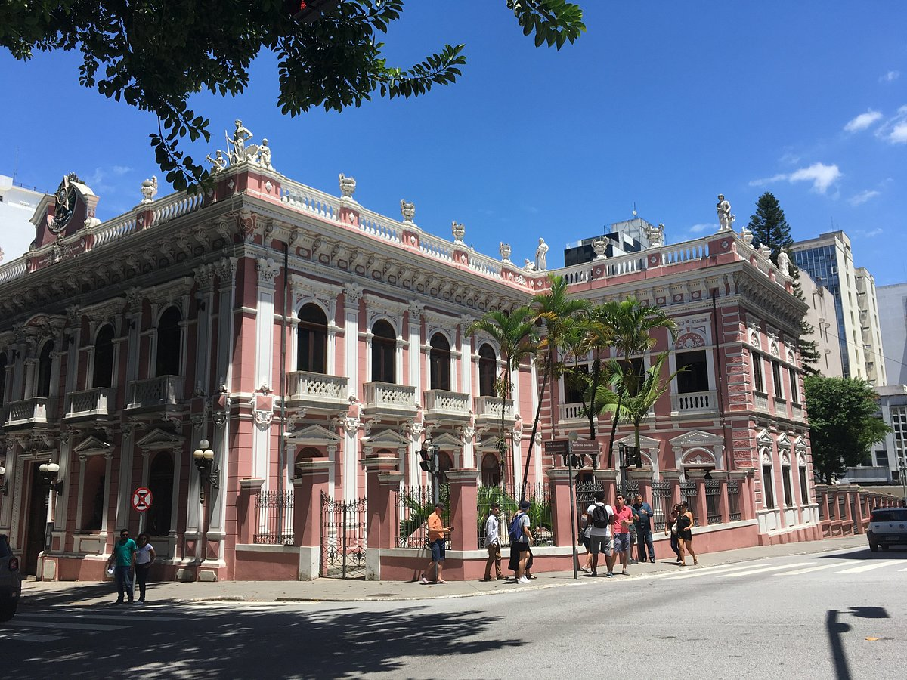

Canasvieiras y el centro de Florianópolis 🇧🇷

Mi viaje al sur de Brasil fue una experiencia de descanso total. Me alojé en Canasvieiras, una playa tranquila con aguas claras y ambiente familiar. Cada mañana salía a caminar por la orilla, con vendedores ambulantes ofreciendo agua de coco y el sonido suave del mar.
Por las tardes, tomaba el colectivo al centro de Florianópolis para recorrer el mercado público, probar comidas locales y disfrutar del ritmo brasileño. La gente es cálida, la música suena en cada esquina y todo huele a mar y a café.